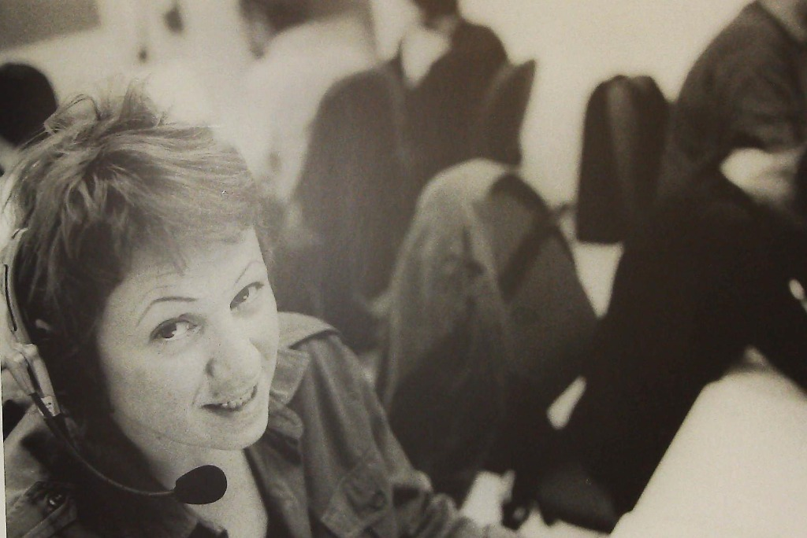

La Rivoluzione del CUP: Dalla Visione di Capodarco al Modello Nazionale
di Fondazione COINSIEME ETS··Tempo di lettura: circa 3 min

La conversione in Legge del Decreto-legge per ridurre le liste di attesa del Servizio Sanitario Nazionale è l'occasione per ricordare un po' di storia a cui ha contribuito anche la nostra Cooperativa sociale Capodarco, già agli inizi degli anni 2000, quando vincemmo la gara per realizzare il centro unico di prenotazione per la città di Roma in occasione del Giubileo del 2000. Da quella prima esperienza, si passò negli anni a seguire all'idea di creare un centro unico di prenotazione Regionale che divenne il RECUP del Lazio. Una realtà che, non solo ancora oggi esiste, anche se non siamo più noi a gestirla, ma che proprio grazie a quell'eccezionale esperienza iniziale si è ulteriormente sviluppata tanto da divenire modello nazionale. Non è presunzione, ma ritengo che fu anche grazie alle nostre capacità, alla nostra sintonia con il sociale, all'impiego di persone disabili che quel disegno vinse le tante resistenze di tipo tecnologico e di potere che si frapponevano con la sua realizzazione. Il RECUP ha rappresentato una svolta epocale nella gestione delle prenotazioni sanitarie, integrando in un unico sistema tutte le prestazioni sanitarie della regione. Questa innovazione ha permesso di centralizzare le prenotazioni, ridurre i tempi di attesa e migliorare l'accessibilità alle cure per i cittadini del Lazio. La nostra visione era quella di creare un sistema trasparente e efficiente, capace di rispondere in tempo reale alle esigenze sanitarie della popolazione.Un altro dei maggiori successi del nostro impegno è stato l'inclusione delle prestazioni fornite dai privati accreditati nel servizio CUP. Questa integrazione, avversata da tanti e dagli stessi privati accreditati inizialmente che temevano controlli sulla loro attività, ha però permesso di ampliare l'offerta di prestazioni sanitarie disponibili, fornendo una ulteriore possibilità per ridurre i tempi di attesa. Certo i problemi oggi non sono finiti ed i mostruosi tempi di attesa, sempre più denunciati dai media, per diverse prestazioni sanitarie stanno lì a dimostrarlo! D'altra parte, la situazione potrebbe essere oggi ben peggiore senza questi strumenti e possiamo andar fieri di esser stati pionieri e co-partecipi insieme alla Regione, al Comune di Roma, ad alcuni operatori di tecnologie di questa grande innovazione. Il nuovo provvedimento legislativo di questi giorni, anche se si tratta in gran parte di una riedizione di altri provvedimenti passati, è comunque una conferma della giustezza nata dal nostro primo modello. Al suo interno, al di là del fatto che non sono previste risorse adeguate, si conferma la validità della nostra visione iniziale. Le misure prevedono l'istituzione di una Piattaforma Nazionale delle Liste di Attesa, la centralizzazione delle prenotazioni tramite CUP unici a livello regionale, e l'integrazione dei sistemi di prenotazione dei privati accreditati e che alleghiamo per una vostra documentazione.